第一部分 · 无模型的因果推断 · Part I — Causal inference without models
第 6 章 · 因果效应的图形表示
Hernán MA, Robins JM（2020）. Causal Inference: What If. Chapter 6. 本页为中文全文翻译，附译注。
因果推断一般离不开专家知识，也离不开我们对连接处理、结局与其他变量的因果网络所做的、不可检验的假设。前面几章关注的是在过度简化的情境里计算因果效应的条件和方法（比如你抬头看天对其他行人行为的因果效应、一项理想化的心脏移植研究），目的是用一个温和的方式，把更复杂情境下那些精妙方法背后的想法引出来。那时我们考察的情境实在太简单，根本没有必要把因果网络显式地画出来。可是，当我们开始把目光转向更复杂的情形时，把我们关于某个具体因果推断问题所涉变量的已知与假设说清楚，就变得至关重要。
本章介绍一种图形工具，用来表达我们对所关心的因果结构的定性专家知识与先验假设。图以一种直观的方式把知识和假设压缩起来，既有助于厘清概念上的问题，也有助于研究者之间的交流。在因果推断问题中用图，能让一条朴素的忠告更容易被遵循：先画出你的假设，再下你的结论。
6.1 因果图
本章描述的图，我们称之为因果图（causal diagram），用来表达关键的因果概念。用于因果推断的图的现代理论，兴起于计算机科学与人工智能这两个学科。这一分支的权威著作有 Pearl（2009）以及 Spirtes、Glymour 和 Scheines（2000）。本章和其后三章，重点都放在借助因果图来厘清问题。
请看图 6.1 中的图。它由三个节点（代表随机变量 L、A、Y）和三条边（箭头）组成。我们约定时间从左向右流动，因此 L 在时间上先于 A 和 Y，A 在时间上先于 Y。和前面几章一样，L、A、Y 分别代表疾病严重程度、心脏移植和死亡。
某个变量 V 指向另一个变量 W 的箭头，表示我们知道：对至少一个人而言，V 对 W 存在直接因果效应（也就是说，这个效应不是经由图上任何其他变量中介的）。反过来，没有箭头，就意味着我们知道：对总体中的任何人，V 对 W 都不存在直接因果效应。例如，在图 6.1 中，从 L 指向 A 的箭头表示疾病严重程度会影响接受心脏移植的概率。一张标准的因果图并不区分一个箭头代表的是有害效应还是保护效应。此外，如果像图 6.1 那样某个变量（这里是 Y）有两个原因，图本身并不编码这两个原因之间如何交互。
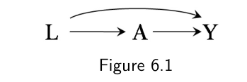
像图 6.1 这样的因果图，被称为有向无环图（directed acyclic graph），通常缩写为 DAG。"有向"（directed），是因为边带方向：从 L 到 A 的箭头指向 A，所以 L 可能引起 A，但反过来不行。"无环"（acyclic），是因为没有环：一个变量不能直接或间接引起它自己。
有向无环图除了因果推断还有许多别的用途。这里我们只关注因果有向无环图。因果 DAG 的一个定义性性质是：在给定其直接原因的条件下，图上任何一个变量都独立于任何其他它并非其原因的变量。这个假设被称为因果马尔可夫假设（causal Markov assumption），它意味着在因果 DAG 中，任意两个变量的共同原因也必须出现在图上。关于因果 DAG 的正式定义，见技术要点 6.1。
举个例子。假设在我们的研究中，个体被随机分配到心脏移植 A，其概率取决于他们疾病的严重程度 L。那么 L 是 A 和 Y 的一个共同原因，需要被纳入图中，如图 6.1 的因果图所示。现在假设在我们的研究中，所有个体都以相同的概率被随机分配到心脏移植，与疾病严重程度无关。那么 L 就不是 A 和 Y 的共同原因，不必纳入因果图。图 6.1 代表一个条件随机化实验，而图 6.2 代表一个边际随机化实验。
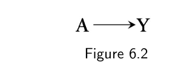
图 6.1 也可以代表一项观察性研究。具体而言，图 6.1 代表这样一种观察性研究：我们愿意假设，心脏移植 A 的分配以疾病严重程度 L 为父节点，而没有 Y 的其他任何原因。否则，Y 的那些原因，即便未被测量，也得出现在图中，因为它们是 A 和 Y 的共同原因。在下一章我们会说明，愿意把图 6.1 当作一项观察性研究的因果图，其实就是把"给定 L 的条件可交换性"这一假设 Ya ⊥⊥ A | L（对所有 a）翻译成了图形语言。
许多人觉得，比起反事实的方法，因果推断的图形方法更好用、更直观。然而，这两种方法联系紧密。具体来说，每一张图背后都关联着一个反事实模型（见技术要点 6.2 和 6.3）。正是这个模型，为我们将要描述的、启发式而直观的图形方法提供了数学依据。不过，传统的因果图并不把背后的反事实变量画在图上，因此图与反事实之间的联系向来是隐藏的。最近发展起来的一种因果有向无环图——单世界干预图（Single World Intervention Graph, SWIG）——通过把反事实变量显式地画在图上，把因果推断的反事实方法和图形方法无缝统一起来。我们把 SWIG 的介绍推迟到第七章，因为本章的内容正是必需的预备知识。
因果图是一种简单的编码方式，记录我们对一个问题的定性因果结构的主题知识与假设。但是，正如后面几节要讲的，因果图也编码了关于因果网络中各变量之间潜在关联的信息。恰恰是这种对关联与因果的同时表达，让因果图成为一件吸引人的工具。下面是对从因果图推断关联的一套图形规则的非正式介绍。我们的重心放在概念性理解，而非形式上的严格。
6.2 因果图与边际独立性
请看下面两个例子。第一，假设你已知使用阿司匹林 A 对心脏病风险 Y 有预防性的因果效应，即 Pr[Ya=1 = 1] ≠ Pr[Ya=0 = 1]。图 6.2 的因果图，就是在一个阿司匹林 A 被随机且无条件分配的实验中，对你这一知识的图形翻译。第二，假设你已知携带打火机 A 对任何人患肺癌 Y 的风险都没有因果效应（既非致病也非预防），即 Pr[Ya=1 = 1] = Pr[Ya=0 = 1]，且吸烟 L 对携带打火机 A 和患肺癌 Y 都有因果效应。图 6.3 的因果图，就是对你这一知识的图形翻译。A 和 Y 之间缺少箭头，表示携带打火机对肺癌没有因果效应；L 被画成 A 和 Y 的共同原因。
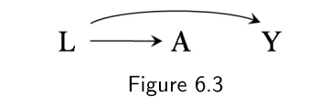
画Figures 6.2 和 6.3 时，我们只用了你关于图中各变量因果关系的知识；但有趣的是，这些因果图还编码了关于图中各变量之间预期关联（或者更准确地说，关联缺失）的信息。我们下面将用启发性论证说明：一般来说，在图 6.2 和 6.3 中 A 与 Y 都会关联，并介绍因果图理论中几个关键的相关结论。
先拿图 6.2 那个随机化实验来说。直觉上，人们会预期两个仅由一条因果箭头相连的变量 A 和 Y 是关联的。因果图理论恰好证明了这一点：当你知道 A 对 Y 有因果效应（如图 6.2），那么一般也应预期 A 和 Y 是关联的。这当然与如下事实一致：在一个具有无条件可交换性的理想随机化实验中，因果 Pr[Ya=1 = 1] ≠ Pr[Ya=0 = 1] 蕴含关联 Pr[Y = 1|A = 1] ≠ Pr[Y = 1|A = 0]，反之亦然。一个用来把握因果图中"因果—关联"对应关系的启发性说法，是把两个变量之间的路径想象成关联流动的管道或导线。关联不同于因果，它是一种对称的双边关系；因此，一旦存在，关联就在两个变量之间流动，而不管因果箭头的方向。在图 6.2 中，说关联从 A 流向 Y，或者从 Y 流向 A，是等价的。
现在看由图 6.3 代表的观察性研究。我们知道携带打火机 A 对肺癌 Y 没有因果效应。问题是：携带打火机 A 是否与肺癌 Y 关联？也就是说，我们知道 Pr[Ya=1 = 1] = Pr[Ya=0 = 1]，但是否也有 Pr[Y = 1|A = 1] = Pr[Y = 1|A = 0]？要回答这个问题，设想一位天真的调查者决定研究携带打火机 A 对肺癌 Y 风险的影响（我们确实知道没有影响，但调查者不知道）。他问了大量的人是否携带打火机，然后记录他们在接下来 5 年里是否被诊断出肺癌。Hera 是其中一名参与者。我们得知 Hera 携带打火机。但如果 Hera 携带打火机（A = 1），那么她更可能是一个吸烟者（L = 1），因此她患肺癌（Y = 1）的风险高于平均水平。于是我们直觉地得出结论：A 和 Y 应当关联，因为携带打火机者（A = 1）的癌症风险不同于不携带打火机者（A = 0），即 Pr[Y = 1|A = 1] ≠ Pr[Y = 1|A = 0]。换句话说，关于处理 A 的信息提升了我们预测结局 Y 的能力，即便 A 对 Y 并没有因果效应。如果调查者仅仅因为 A 和 Y 关联就断定 A 对 Y 有因果效应，那就错了。因果图理论再次确认了我们的直觉：在图形上，A 和 Y 之所以关联，是因为存在一条经共同原因 L、从 A 流向 Y（或等价地，从 Y 流向 A）的关联流。
再看第三个例子。假设你已知某个遗传单倍型 A 对任何人成为吸烟者 Y 的风险都没有因果效应，即 Pr[Ya=1 = 1] = Pr[Ya=0 = 1]，并且该单倍型 A 和吸烟 Y 都对心脏病 L 的风险有因果效应。图 6.4 的因果图，就是对你这一知识的图形翻译。A 和 Y 之间缺少箭头，表示单倍型对吸烟没有因果效应，而 L 被画成 A 和 Y 的共同效应。这个共同效应 L 被称为路径 A → L ← Y 上的碰撞因子（collider），因为两个箭头在此节点相撞。
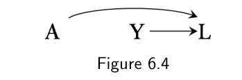
问题仍然是 A 和 Y 是否关联。要回答，设想另一位调查者决定研究单倍型 A 对成为吸烟者 Y 的风险的影响（我们确实知道没有影响，但她不知道）。她对一大批儿童做基因分型，然后记录他们最终是否成了吸烟者。Apollo 是其中一名参与者。我们得知 Apollo 没有该单倍型（A = 0）。他比一般人更可能还是更不可能成为吸烟者（Y = 1）？了解单倍型 A 并不能提升我们预测结局 Y 的能力，因为有单倍型（A = 1）和没有单倍型（A = 0）者的风险是一样的，即 Pr[Y = 1|A = 1] = Pr[Y = 1|A = 0]。换句话说，我们会直觉地得出 A 和 Y 不关联的结论，即 A 和 Y 独立，或 A ⊥⊥ Y。在考虑 A 和 Y 之间的关联时，关于" A 和 Y 都引起心脏病 L "的知识是无关的。因果图理论再次确认了我们的直觉，因为它指出：碰撞因子不同于其他变量，它会阻断其所在路径上的关联流动。因此 A 和 Y 独立，因为它们之间唯一的路径 A → L ← Y 被碰撞因子 L 阻断了。
总结一下：当两个变量中的一个引起另一个，或者它们共享共同原因时，二者（边际上）关联；否则它们（边际上）独立。下一节探讨两个变量 A 和 Y 在给定第三个变量 L 的条件下可能独立的情形。
6.3 因果图与条件独立性
我们重访图 6.2、6.3 和 6.4 所刻画的情境，来讨论因果图中的条件独立性概念。
根据图 6.2，我们预期阿司匹林 A 与心脏病 Y 关联，因为阿司匹林对心脏病有因果效应。现在假设我们得到了一个额外的信息：阿司匹林 A 之所以影响心脏病 Y 的风险，是因为它降低了血小板聚集 B。这个新知被翻译成图 6.5 的因果图，其中血小板聚集 B（1：高，0：低）是 A 对 Y 效应的中介变量。
一旦在因果图中引入第三个变量，我们就可以问一个新问题：在 B 的各层（条件于 B）之内，A 和 Y 之间是否还有关联？等价地问：在我们已有 B 的信息时，关于 A 的信息是否还能提升我们预测 Y 的能力？要回答，假设我们在大量个体上收集了 A、B、Y 的数据，并把分析限制在血小板聚集低（B = 0）的那部分个体中。图 6.5 中节点 B 周围的方框，就表示这个限制。（如果分析限制在 B = 1 的亚组中，我们也会给 B 画一个框。）
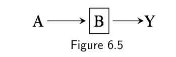
血小板聚集低（B = 0）的个体，患心脏病的风险低于平均水平。现在取其中一人。无论他是接受了治疗（A = 1）还是未治疗（A = 0），我们早就因为他血小板聚集低而知道他的风险低于平均水平。事实上，由于阿司匹林只能通过血小板聚集来影响心脏病风险，知道一个人的治疗状态并不会为预测其心脏病风险提供任何额外信息。因此，在 B = 0 的亚组中，处理 A 与结局 Y 并不关联。（对 B = 1 组的论证同样成立。）尽管 A 和 Y 在边际上关联，但在给定 B 的条件下 A 和 Y 条件独立（不关联），因为在 B 的各层内，接受治疗者与未治疗者的心脏病风险相同：对所有 b 都有 Pr[Y = 1|A = 1, B = b] = Pr[Y = 1|A = 0, B = b]。即 A ⊥⊥ Y | B。在图形上，我们说围绕变量 B 画的框阻断了经路径 A → B → Y 的关联流动。
现在回到图 6.3。上一节我们得出结论：携带打火机 A 与肺癌 Y 风险关联，因为路径 A ← L → Y 向从 A 到 Y 的关联流敞开。我们现在问的是：在给定 L 的条件下，A 是否与 Y 关联？这个新问题由图 6.6 中 L 周围的框表示。假设调查者把研究限制在从不吸烟者（L = 0）。那样一来，知道一个人携带打火机（A = 1）并不能帮助预测他患肺癌（Y = 1）的风险，因为"更好预测"的整个论证依赖于携带打火机的人更可能是吸烟者这一事实。当研究限制在从不吸烟者、或者更一般地说限制在吸烟强度特定的人群时，这个论证就无关了。尽管 A 和 Y 在边际上关联，但在给定 L 的条件下 A 和 Y 条件独立，因为在 L 的各层内接受治疗者与未治疗者的肺癌风险相同：对所有 l 都有 Pr[Y = 1|A = 1, L = l] = Pr[Y = 1|A = 0, L = l]。即 A ⊥⊥ Y | L。在图形上，我们说 A 和 Y 之间的关联流动被 L 周围的框中断，因为路径 A ← L → Y 被这个框阻断了。
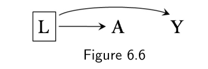
最后再看图 6.4。上一节我们得出结论：拥有单倍型 A 与成为吸烟者 Y 独立，因为 A 和 Y 之间的路径 A → L ← Y 被碰撞因子 L 阻断。我们现在用启发性论证说明：一般来说，在给定它们的共同效应 L 的各层内，A 和 Y 将条件关联。假设调查者（他们 interested in 估计单倍型 A 对吸烟状态 Y 的效应）把研究总体限制在患心脏病（L = 1）的个体中。图 6.7 中 L 周围的方框表示他们正在条件化于 L 的某个特定取值。知道一个患心脏病的人缺少单倍型 A，会提供一些关于她吸烟状态的信息，因为在没有 A 的情况下，L 的另一个原因（如 Y）更可能存在。也就是说，在患心脏病的人中，没有单倍型 A 的人里吸烟者的比例更高。因此，在 L = 1 的条件下，A 和 Y 呈反向关联。如果调查者仅仅因为 A 和 Y 在 L 的各层内关联就断定 A 对 Y 有因果效应，那他就错了。在极端情况下，如果 A 和 Y 是 L 仅有的两个原因，那么在患心脏病的人中，缺了其中之一就完美预测另一个的存在。因果图理论表明：确实，条件化于一个像 L 这样的碰撞因子，会打开原本被该碰撞因子阻断的路径 A → L ← Y。直觉上，两个变量（原因）是否关联，不能被它们未来（效应）的一个事件所影响；可是，一旦我们按共同效应对两个原因分层，它们一般会变得关联。
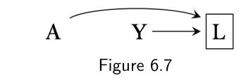
再看一个例子，图 6.8 在图 6.7 的基础上增加了一个利尿剂 C，其使用是心脏病诊断的结果。A 和 Y 在 C 的各层内也会关联，因为 C 是 A 和 Y 的共同效应。因果图理论表明：条件化于一个受碰撞因子 L 影响的变量 C，也会打开路径 A → L ← Y。在既没有条件化于碰撞因子 L、也没有条件化于它的后果 C 时，这条路径是被阻断的。
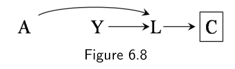
本节和上一节回顾了两个变量可能关联的三种结构性原因：一个引起另一个；它们共享共同原因；或者它们共享一个共同效应、且分析被限制在共同效应（或其后代）的某个取值内。在此过程中我们引入了一些图形规则，可应用于任意因果图来判断两个变量是否（条件）独立。我们用来支撑这些图形规则的论证是启发式的，依赖于我们的因果直觉。不过，这些论证已被形式化并经过数学证明。关于图形规则的系统总结见精细辨析 6.1，关于忠实性（faithfulness）概念的介绍见精细辨析 6.2。
还有另一个我们尚未讨论的、两个变量间关联的可能来源：偶然性或随机变异。与两个变量间关联的结构性原因（一个对另一个的因果效应、共享的共同原因、条件化于共同效应）不同，随机变异导致的偶然关联，会随着研究总体规模增大而变小。
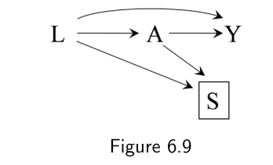
为了让讨论聚焦于结构性关联而非偶然关联，我们继续假定（直到第十章）我们记录了我们感兴趣的、一个非常大（也许是假想的）总体中每一个个体的数据。
6.4 因果图中的可阳性性与一致性
因为因果图编码了我们对因果结构的定性专家知识，它们可以被用作一种视觉辅助，帮助厘清概念问题并指导数据分析。事实上，我们在第 2 章用来量化处理效应的那些公式——标准化与逆概率加权——也可以从因果图理论推导出来，作为有时被称为 do-演算（do-calculus）的一部分。因此，我们在第 1–5 章对反事实理论的选择，并没有真正偏袒某一种特定方法，只是偏袒了一种特定记号。
无论用哪种记号（反事实或图），可交换性、可阳性性与一致性，都是通过标准化或逆概率加权进行因果推断所要求的条件。如果其中任一条件不成立，数据分析得出的数字就可能无法被恰当地解释为因果效应的度量。在下一节（以及第 7、8 章）我们将讨论可交换性条件如何被翻译成图形语言。这里我们聚焦于可阳性性与一致性。
可阳性性粗略地翻译成图形语言，就是：从节点 L 指向处理节点 A 的箭头不是确定性的。一致性的第一个组成部分——定义良好的干预——意味着从处理 A 指向结局 Y 的箭头，对应于一个可能是假想的、但相对无歧义的干预。在本书讨论的因果图中，除非另有说明，可阳性性是隐含的；而一致性则内嵌于记号之中，因为我们只考虑具有相对定义良好的干预的处理节点。可阳性性关心的是进入处理节点的箭头，而定义良好的干预只关心离开处理节点的箭头。因此，处理节点被隐含地赋予了不同于所有其他节点的地位。一些作者通过把决策节点纳入因果图来显式化这种区别。尽管这种决策论进路大体上导出了此处描述的方法，我们在本章的因果图中并不纳入决策节点。因为我们对变量 A 上潜在干预的所指向来是显式的，额外的节点（用来表示潜在干预）会有点多余。不过，在后续章节使用 SWIG（带有表示反事实变量节点的因果图）时，我们会赋予处理节点不同的地位。
处理节点与其他节点地位不同，在第二章引入的因果树中也表现得很明显：与处理无关的分支（对应非处理变量 L 和 Y）被圈在圆圈里；第五章中表示充分病因的"馅饼"图，则区分了潜在处理 A、E 与背景因素 U。此外，我们在第三章关于处理"足够定义良好的干预"的讨论，强调了施加于处理变量 A 上的要求并不适用于其他变量。
与此相对，本章的因果图似乎赋予图中所有变量同等的地位——当因果图被视为带独立误差的非参数结构方程模型的表示时（见技术要点 6.2），情况确实如此。因果图中所有变量看似平等的地位可能具有误导性，因为其中某些变量对应的是定义不良的干预。画一张包含"肥胖"作为结局 Y、甚至作为协变量 L 的因果图也许没问题（第 9.5 节还会讨论）。然而，由于第三章讨论过的原因，把"肥胖"作为处理 A 画进因果图通常是不对的。在因果图中，处理变量的节点需要对应于足够定义良好的干预。
例如，假设我们像第三章讨论的那样，对"减重" A 对死亡率 Y 的潜在因果效应感兴趣。图 6.10 的因果图包含 A 和 Y 的节点，以及影响体重的若干因素的节点。为简单起见，因果图只纳入其中三个因素：热量摄入 Z（我们假设它只能通过减重影响死亡率）、运动 L（它能经由减重之外的路径影响死亡率），以及遗传特征 U（它能经由与减重无关的其他路径影响死亡率）。
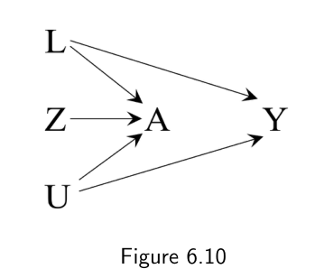
识别并解释处理 A 对结局 Y 的效应，需要关于如何干预 A 的知识。当存在几种潜在的干预 A 的方式、且其中某些潜在干预对结局 Y 有直接效应（如图 6.10）时，" A 对 Y 的效应"指的是什么就变得不清楚了。在我们的例子中，通过限制热量 Z 来减重，与通过增加运动 L、或通过遗传操作 U 来减重，会导致不同的死亡风险。即便我们愿意忽略那个定义不良的因果效应，识别为达到可交换性所需的变量也将是巨大的挑战，正如第三章所讨论的。对我们所关心的干预保持显式，是迈向"定义良好的因果效应、识别相关数据、选择调整变量"的重要一步。
6.5 偏倚的结构性分类
"偏倚"（bias）这个词，做因果推断的调查者经常用。这个术语有几种相关但在技术上不同的用法（见第 10 章）。我们说存在系统性偏倚（systematic bias），是指即便在无限样本量下，数据也不足以识别——计算出——因果效应。（在本章，由于假定了无限样本量，偏倚指的就是系统性偏倚。）非正式地，我们常把系统性偏倚说成：在处理与结局之间、并非源于所关心总体中"处理对结局的因果效应"的任何结构性关联。因为因果图有助于表达关联的不同来源，我们可以用因果图按来源对系统性偏倚分类，从而让关于偏倚的讨论更清晰。
拿我们在前面几章反复讨论的那个关键偏倚来源来说：处理组与未处理组之间缺乏可交换性。对于整个总体的平均因果效应，我们说存在（无条件）偏倚，当且仅当 Pr[Ya=1 = 1] − Pr[Ya=0 = 1] ≠ Pr[Y = 1|A = 1] − Pr[Y = 1|A = 0]，这恰好就是（无条件）可交换性 Ya ⊥⊥ A 不成立的情形。不存在（无条件）偏倚，意味着总体中的关联度量（例如关联风险比或风险差）是相应效应度量（例如因果风险比或风险差）的一致估计。
即便在处理对结局没有因果效应的原假设成立时，缺乏可交换性也会导致偏倚。也就是说，即便处理对结局没有因果效应，数据和结局也会关联。我们于是说，缺乏可交换性导致了"原假设下的偏倚"（bias under the null）。在表 3.1 总结的观察性研究中，原假设下存在偏倚，因为因果风险比是 1，而关联风险比是 1.26。任何导致原假设下偏倚的因果结构，也都会导致备择假设下（即处理确实对结局有非零效应时）的偏倚。然而反过来不成立。
对于在 L 各层内的平均因果效应，我们说存在条件偏倚，当且仅当至少对某一层 l，Pr[Ya=1 = 1|L = l] − Pr[Ya=0 = 1|L = l] 异于 Pr[Y = 1|L = l, A = 1] − Pr[Y = 1|L = l, A = 0]，而这一般就是条件可交换性 Ya ⊥⊥ A | L = l（对所有 a 和 l）不成立的情形。
在本书中我们此前多次提到缺乏可交换性。然而，我们尚未探究究竟是什么因果结构产生了缺乏可交换性。在因果图加入我们的方法库之后，我们就能描述缺乏可交换性如何可能源于两种不同的因果结构：
1. 共同原因：当处理与结局共享一个共同原因时，关联度量一般不同于效应度量。许多流行病学家用"混杂"（confounding）一词来指这种偏倚。
2. 条件化于共同效应：这种结构就是许多流行病学家所说的"原假设下的选择偏倚"（selection bias under the null）的来源。
第 7 章将聚焦于由共同原因存在导致的混杂偏倚，第 8 章则聚焦于由条件化于共同效应导致的选择偏倚。二者都是由缺乏可交换性引起的"原假设下偏倚"的例子。第 9 章将聚焦于另一种偏倚来源：测量误差。到目前为止我们都假定所有变量——处理 A、结局 Y 和协变量 L——都被完美测量。然而在实践中，某种程度的测量误差是预期会有的。由测量误差导致的偏倚被称为测量偏倚（measurement bias）或信息偏倚（information bias）。我们将会看到，某些类型的测量偏倚也会导致原假设下的偏倚。
另一种偏倚也可能来自（非结构性的）随机变异。见第 10 章。因此，在接下来三章中，我们把注意力转向三类系统性偏倚——混杂、选择和测量。这些偏倚在观察性研究与随机化实验中都可能出现。随机化实验易受偏倚影响，这点从前面几章或许并不明显；前面几章我们把观察性研究概念化为某种不完美的随机化实验，而只考虑那些没有参与者在随访中流失、所有参与者都依从其被分配处理、且研究参与者和调查者都不知道处理分配的理想的随机化实验。尽管我们对随机化实验那种近乎神话般的描述有助于教学，但真实的随机化实验很少是那个样子。第一部分余下的章节将详细阐述"实验"与"观察"之间有时模糊的边界。
在此之前，我们先绕一个小弯，描述存在效应修饰时的因果图。
6.6 效应修饰的结构
识别潜在的偏倚来源，是因果图的一项关键用途：我们可以用因果专家知识画图，然后搜寻处理与结局之间的关联来源。因果图在说明我们在第 4 章讨论的效应修饰概念时，帮助就没那么大了。
假设心脏移植 A 在一项实验中被随机分配，以识别 A 对死亡 Y 的平均因果效应。为简单起见，我们假定没有偏倚，因此图 6.2 恰当地代表了这项研究。计算 A 对 Y 风险的效应毫无挑战。因为关联即因果，关联风险差 Pr[Y = 1|A = 1] − Pr[Y = 1|A = 0] 可以解释为因果风险差 Pr[Ya=1 = 1] − Pr[Ya=0 = 1]。然而调查者想更进一步，因为他们怀疑心脏移植的因果效应随参与研究的各家医院所提供的医疗质量而变化。于是，调查者把所有个体归类为接受了高（V = 1）或正常（V = 0）质量的医疗，按第 4 章所述计算 V 各层中的分层风险差，并确实证实 V 在可加尺度上存在效应修饰。图 6.11 的因果图包含了效应修饰变量 V，它有一个箭头指向结局 Y，但没有箭头指向处理 A（因为 A 是随机分配的，因此独立于 V）。这里有两个重要告诫。
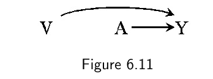
第一，图 6.11 的因果图即便不包含 V 也仍然是一张有效的因果图，因为 V 不是 A 和 Y 的共同原因。只是因为因果问题涉及了 V（即：在 V 的各层内 A 对 Y 的平均因果效应是多少？），V 才需要被纳入因果图。沿"医疗质量" V 与结局 Y 之间路径测量的其他变量，也可能够格成为效应修饰。例如，图 6.12 显示了效应修饰变量"治疗并发症" N，它部分中介了 V 对 Y 的效应。
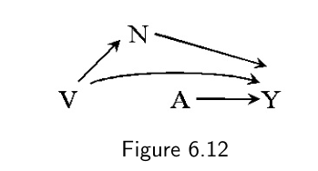
第二，图 6.11 的因果图并不必然表示存在由 V 造成的效应修饰。这张因果图只说明 A 和 V 都影响死亡 Y，但它并不区分 V 修饰 A 对 Y 效应的以下三种性质上不同的方式：
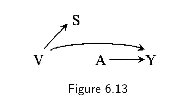
1. 处理 A 对死亡率 Y 的因果效应，在 V = 1 层与 V = 0 层中方向相同（即都有害或都有益）。
2. 处理 A 对死亡率 Y 的因果效应方向，在 V = 1 层与 V = 0 层中相反（即存在定性效应修饰）。
3. 处理 A 在 V 的某一层中对 Y 有因果效应，而在另一层中无因果效应（例如 A 只杀死 V = 0 的个体）。
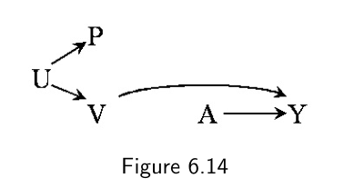
也就是说，像图 6.11 这样有效的因果图，无法区分上述三种性质不同的 V 效应修饰类型。
在上面这个例子中，效应修饰变量 V 对结局有因果效应。然而许多效应修饰变量对结局并没有因果效应。毋宁说，它们是那些对结局有因果效应的变量的替代者（surrogate）。图 6.13 包含了变量"治疗费用" S（1：高，0：低），它受"医疗质量" V 影响，但自身对死亡率 Y 没有影响。一项按 S（而不是按 V）分层分析，一般也会检出由 S 造成的效应修饰，尽管真正修饰 A 对 Y 效应的是 V。变量 S 是替代效应修饰变量（surrogate effect modifier），而变量 V 是因果效应修饰变量（causal effect modifier）（见第 4.2 节）。因为因果与替代效应修饰变量在实践中往往难以区分，"效应修饰"这个概念同时涵盖二者。正如第 4.2 节所讨论的，有人偏好用中性的"因果效应的异质性"（heterogeneity of causal effects）而非"效应修饰"，以避免混淆。例如，有人可能会把"费用修饰了心脏移植对死亡率的效应，因为费用越高效应越有益"这句话，解读为一条不加区分地提高医疗价格、却未必提高其质量的论据。
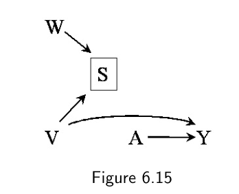
一个替代效应修饰变量，只是一个与因果效应修饰变量关联的变量。图 6.13 描绘的是这种关联源于因果效应修饰变量对替代效应修饰变量的影响。然而，这种关联也可能源于共享的共同原因或条件化于共同效应。例如，图 6.14 包含变量"居住地"（1：希腊，0：罗马）U 与"护照定义的国籍" P（1：希腊，0：罗马）。居住地 U 是医疗质量 V 与国籍 P 的共同原因。因此 P 会表现得像一个替代效应修饰变量，因为 P 与因果效应修饰变量 V 关联。另一个（坦白说有点傻的）例子来说明这点：图 6.15 包含变量"治疗费用" S 和"在医院饮用瓶装矿泉水（而非自来水）" W。在发达国家，矿泉水使用 W 影响费用 S，但不影响死亡率 Y。如果研究限制在低费用医院（S = 0），那么矿泉水使用 W 一般会与医疗 V 关联，于是 W 会表现得像一个替代效应修饰变量。总结一下，替代效应修饰变量可以通过包括共同原因、条件化于共同效应、或因果关系在内的结构，与因果效应修饰变量关联。
关于低费用医院 S = 0 中 W 与 V 关联的直觉：设想那些使用矿泉水的低费用医院，需要通过在降低死亡率的医疗组成上少花钱，来抵消矿泉水的额外成本。那么矿泉水的使用就会与医疗质量在低费用医院中呈反向关联。因果图原则上对两个处理 A 和 E 之间是否存在交互作用是不可知的。不过，当因果图被增强了表示充分成分病因（见第 5 章）的节点——即从处理到充分成分病因带有确定性箭头的节点——时，它可以编码关于交互作用的信息。因为交互作用的存在会影响由条件化于共同效应所导致的关联的大小与方向，这些增强的因果图将在第 8 章讨论。